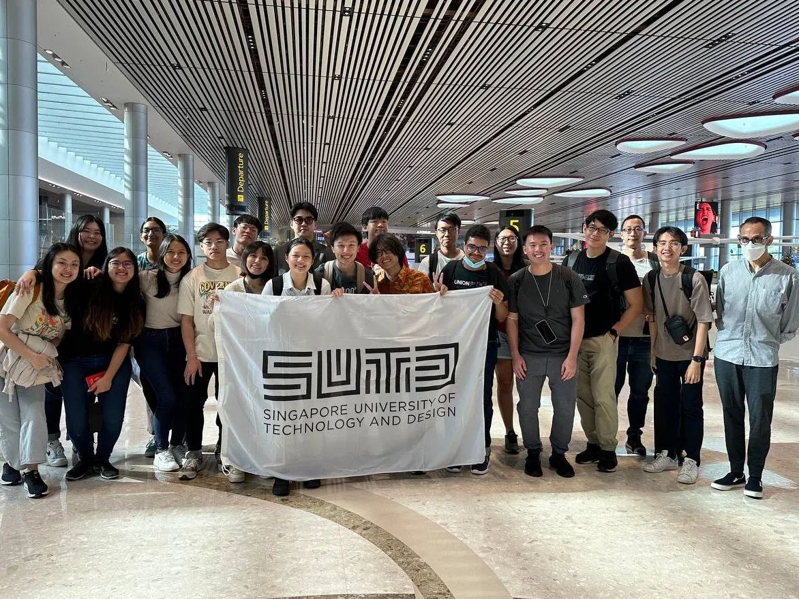
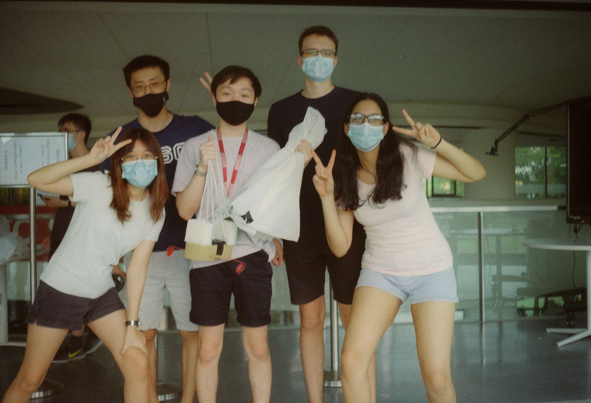
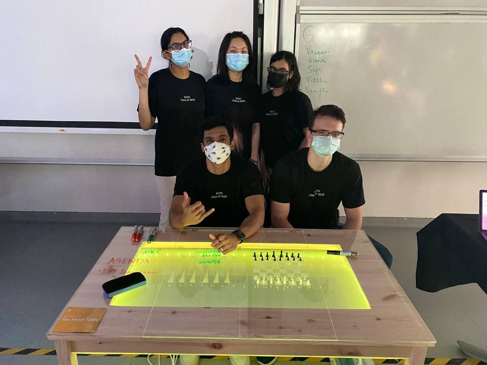
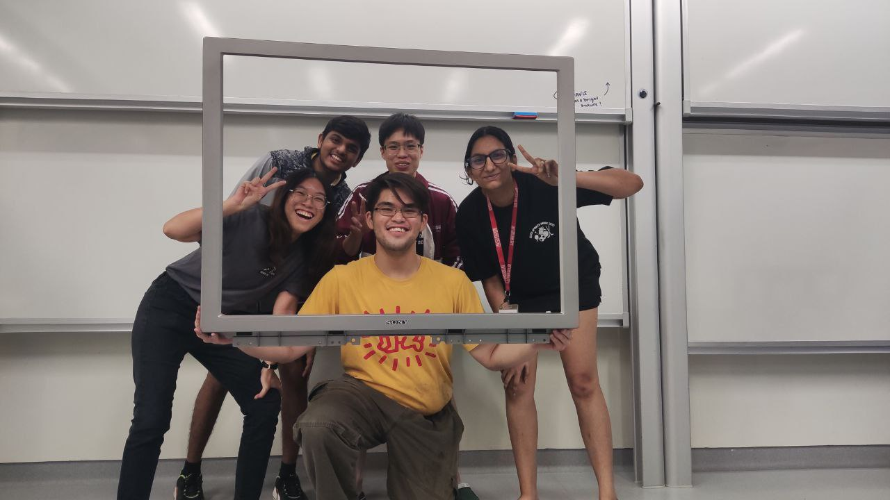
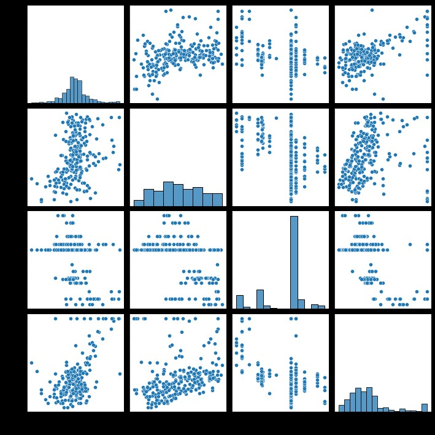
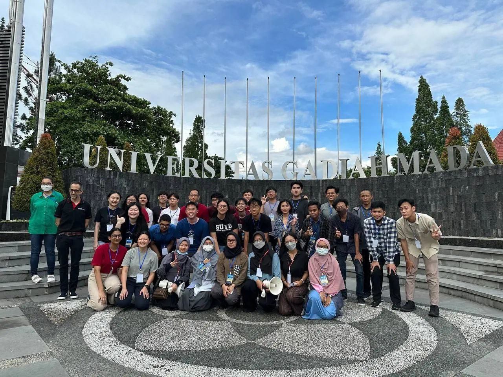
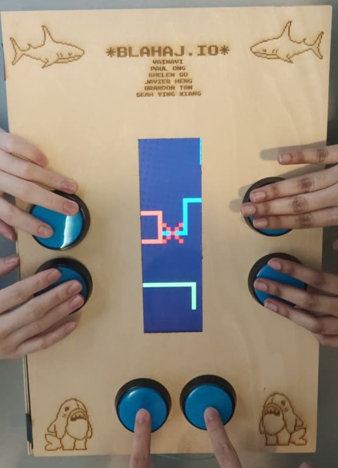
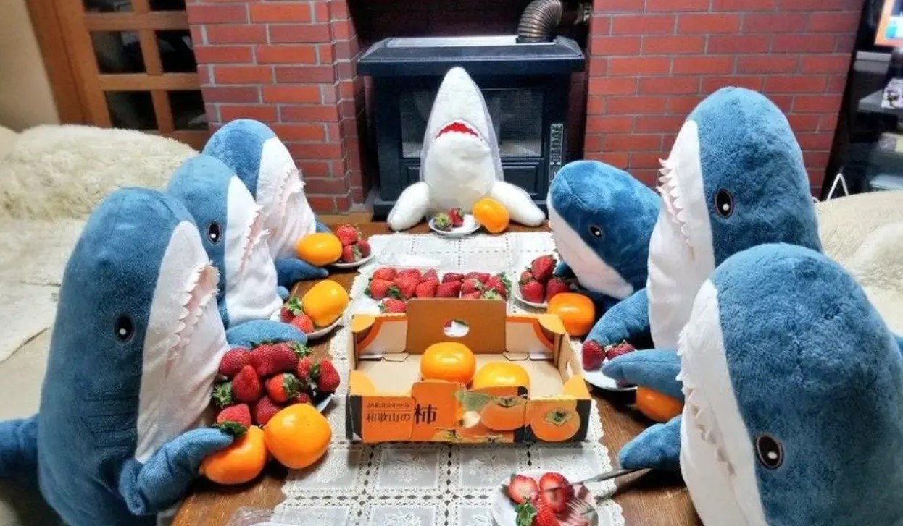

My fascination with Computer Science and Design stems from my strong interest in tackling and coming up with solutions to the toughest problems together with the support of my project teammates and clients. This interest motivated me to participate in an International Science Study Tour to Hanoi in 2019, where the Vietnam High School’s Science Club students created an entire robot from scratch and used programming to collect and analyse the efficiency of the robot. After participating in such activities in ASRJC and thorough research, I learnt about how diverse the learning/teaching style is in SUTD. Which is why I applied to study Data Analytics at SUTD.


• Use a visual program (specifically, Rhino and Grasshopper) to simulate forces acting on the parachute system in a Computer Aided Design (CAD) environment.
• Apply Excel to implement numerical methods to solve problems coming from engineering and science.
• Apply physics principles used to explain and prototype a working landing mechanism prototype to ensure 1D parachute flight, an upright landing position, and minimal impact force with the ground.

Link to Wordpress Website:
http://asd.courses.sutd.edu.sg/dti-teams/project-part-4-26/
• The Focus Table acts as a device that helps our target users, students, to experience a productive study session while also taking the much needed breathers in between.
• Exercise the design thinking values such as:
Design a virtual Prototype - Utilised CAD modelling and inserting it into a virtual environment using both SketchFab and Render. – Basics of Machining (Prototyping) and Wordpress. Evaluate the product based on the Force Calculation and Sensor Detection Mechanisms. Evaluate the project based on the Sustainable World concepts (Includes Material Choice, how our product affects the Current Site, Sustainability & Environmental Impact, End-of-life Analysis).

• Using concepts such as Basics of Solar panel and I-V characteristics, Basics of Machining (Prototyping).
• Examine data, and use tools (Python Matplotlib, Seaborn and Excel) to visualize data and uncover relationships. Compute point estimates and construct confidence intervals from a data sample. Perform hypothesis tests. Using Concepts such as: Visualizing data, Time series and data manipulation, Mean and variance of random variables, The normal distribution, Confidence intervals.

Check out my full documentation of my learning experience with Machine Learning here: https://medium.com/@vainavikiran/machine-learning-f7bcf723dbba
The code was all written in Python using the pandas DataFrame and numpy package. As mentioned in the documentation, I had showcased use of the Seaborn Library too.
Side Note: I have exposure to more useful tools such as Pytorch, Tensorflow and scikit-learn but this documentation was be focused on demonstrating the concepts and my python proficiency.

[SUTD] Modelling Uncertainty
[UGM] Renewable Energy Source

• Design and programme an Android application using Android Studio (Java) and working with Backend Components like API and Firebase to improve effective communication between neighbours in residential communities.
• Focus on both the Development and the UI/UX of the application.
• Software Design - Project Structure: Model View Controller (MVC).

• Create an electronic game machine from scratch with no OS, no microcontrollers, no drivers, and certainly no fancy high-level languages like Python.
• Using concepts such as Assembly Language, Lucid, Alchitry, Beta-CPU and more
• Implement 16-bit ALU design on an FPGA using the Alchitry Au FPGA
• Now, I look forward to learning more about the different Operating Systems in the following term too!

Using Tools like Excel and Tableau
(TBC)